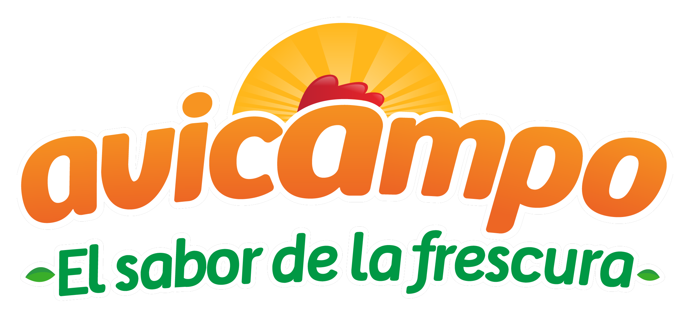

Propuesta de Alcance y Estimación Técnica — Mejoras al Agente de IA
El agente de WhatsApp de Avicampo ya opera y atiende pedidos — el reto es convertirlo en una fuente de datos, seguimiento y reactivación comercial para el negocio.
Nuevas tarjetas de KPIs, mejoras a los gráficos existentes y una nueva métrica de productos consultados, manteniendo los filtros actuales de rango de fechas y sucursal.
Conversaciones iniciadas, clientes únicos, conversión a venta (%), ticket promedio, tiempo promedio de conversación y tasa de abandono (%). Se corrige la lógica de clientes únicos para no contar pedidos repetidos.
Se incorpora la cantidad de pedidos junto a los ingresos en el mismo gráfico, usando eje secundario.
El porcentaje de cada segmento se muestra visible directamente sobre la torta, sin necesidad de pasar el cursor.
Se agrega el porcentaje de participación a las listas ya existentes.
Nueva métrica que registra en backend las consultas por producto dentro de las conversaciones, incluyendo clientes que finalmente no compraron.
Nuevo módulo dentro del Panel técnico con embudo de conversión interactivo, motivos de conversación, clasificación de usuarios y exportación de datos para retargeting.
Backend de registro de 8 etapas por conversación (del saludo al pedido confirmado). Cada día distinto en que el usuario escribe reingresa al embudo.
Visualización de las 8 etapas con despliegue tipo árbol al hacer clic, para ver los usuarios que quedaron en cada una.
Reporte de motivos, separando clientes con compra y sin compra.
Exportación en Excel de la base de clientes que no compraron, lista para campañas.
Cálculo mensual de usuarios Nuevos, Frecuentes e Inactivos según reglas acordadas.
Panel de detalle del cliente dentro del chat y ajustes al módulo de Clientes: campos opcionales, reorganización de columnas y exportación completa.
Pedidos acumulados (con enlace a fechas y valores de cada orden), valor total comprado, top 3 productos habituales, días desde la última conversación, opción seleccionada, última etapa alcanzada y estado final.
Campos no obligatorios al guardar; se prioriza Dirección, Barrio y Ciudad (correo oculto o al final); nuevas columnas de fecha y días sin interacción.
Exportación completa de la base de clientes incluyendo todos los campos nuevos.
Sistema de campañas programadas por WhatsApp con segmentación de audiencia y cancelación automática por interacción o compra del cliente.
Segmentación de audiencia por días inactivos y última etapa de abandono.
Scheduler de programación con selección de plantilla de WhatsApp existente.
Condición crítica: si el cliente interactúa o compra antes del envío programado, el sistema lo retira de la lista, verificando inmediatamente antes de cada envío.
Programación de campañas integrada con las plantillas existentes, sujeta a aprobación previa de Meta (tiempos externos, no incluidos en la estimación).
Estructura del proyecto, UX y esquema de trabajo, e implementación y entrega, ejecutados por especialistas de cada frente bajo metodología ágil.
Dirección técnica, arquitectura y ceremonias ágiles del proyecto.
Esquema de interacción y experiencia de cada módulo nuevo.
Construcción de dashboards, embudo visual y paneles de cliente.
Lógica de tracking, campañas automatizadas e integraciones.
Validación funcional de cada entregable antes de despliegue.
Capacitación y puesta en marcha con el equipo de Avicampo.
Estructura y ajustes del agente de inteligencia artificial.
Sprints cortos, entregas incrementales y comunicación continua.